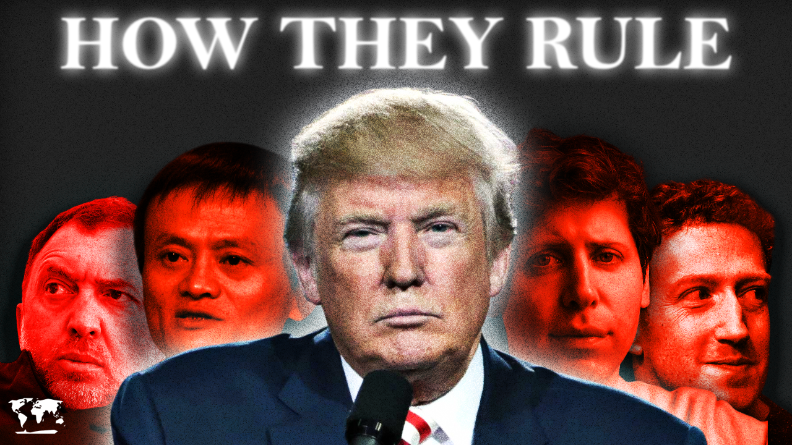
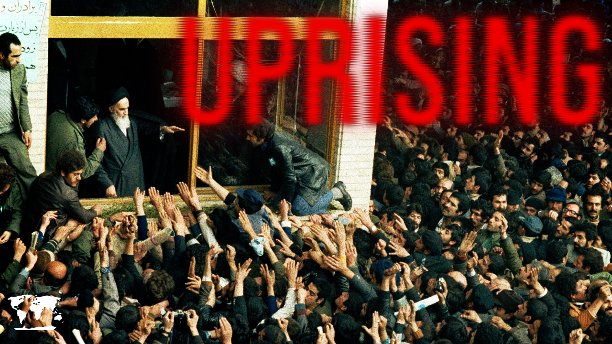
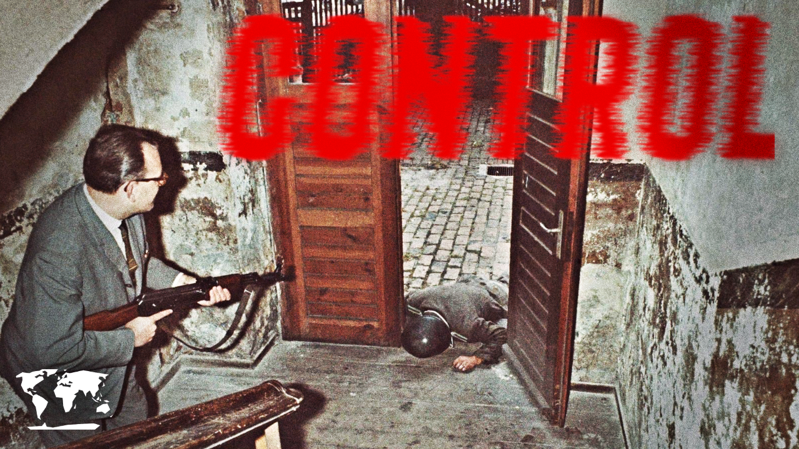
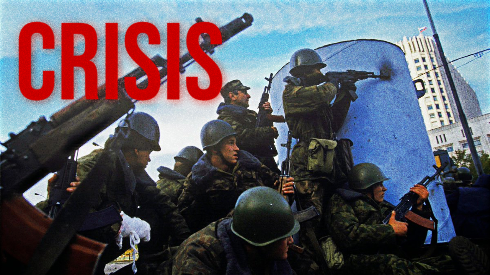
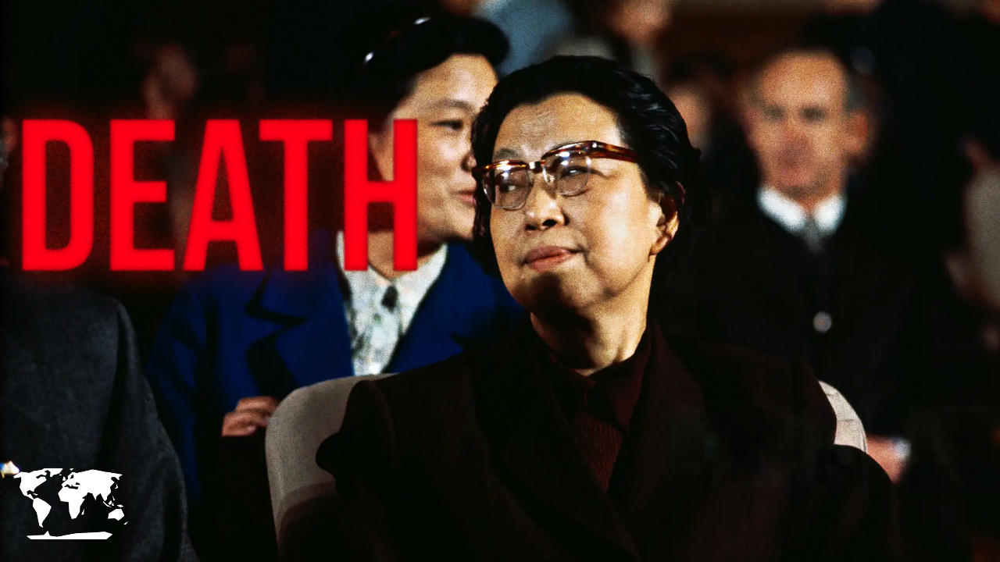

The War That Putin Won
The 2008 Russo-Georgian War: a five-day conflict that previewed Russia's playbook for Ukraine

The War That Made Putin
The Second Chechen War and the apartment bombings that put Vladimir Putin in power

The War That Broke the Russian Army
The First Chechen War and the Battle of Grozny, where Russian troops suffered a catastrophic defeat

How is North Korea Still Here?
Why North Korea's ideology and machinery of repression have kept the world's most isolated state intact

What Really Happened at Tiananmen Square?
The 1989 protests and the crackdown that ended them, and why parts of that night are still disputed

no thumbnail'">How Oligarchs Rule the World
China's billionaire crackdown and the new global minimum tax; two fronts in the fight against oligarchic power

How Oligarchs Took Over the World
From Russian privatisation to Silicon Valley: how billionaires captured political power

no thumbnail'">The Revolution that Transformed Iran
The Iranian Revolution of 1979 and the birth of the Islamic Republic

no thumbnail'">The Secret Police That Spied on Everyone
How the Stasi turned East Germany into a surveillance state, and the methods it used to control a country

When a Secret Organization Overthrew Korea's President
October 26, 1979: Park Chung-hee's assassination and the secret military faction that moved in after

The Military Coup That Broke Chile
September 11, 1973: the fall of Allende and the rise of Pinochet

When Georgia Had a Violent Coup
Zviad Gamsakhurdia's fall and the civil war that followed Georgian independence

The Revolution That Ended Communist Romania
Ceaușescu's fall and the Timișoara uprising that triggered Romania's bloody 1989 revolution

no thumbnail'">The Coup That Almost Ended Russia
October 1993: Yeltsin's standoff with parliament and the street battles that followed in Moscow

no thumbnail'">When China Had a Public Purge
The Gang of Four trial and the spectacle of revolutionary justice